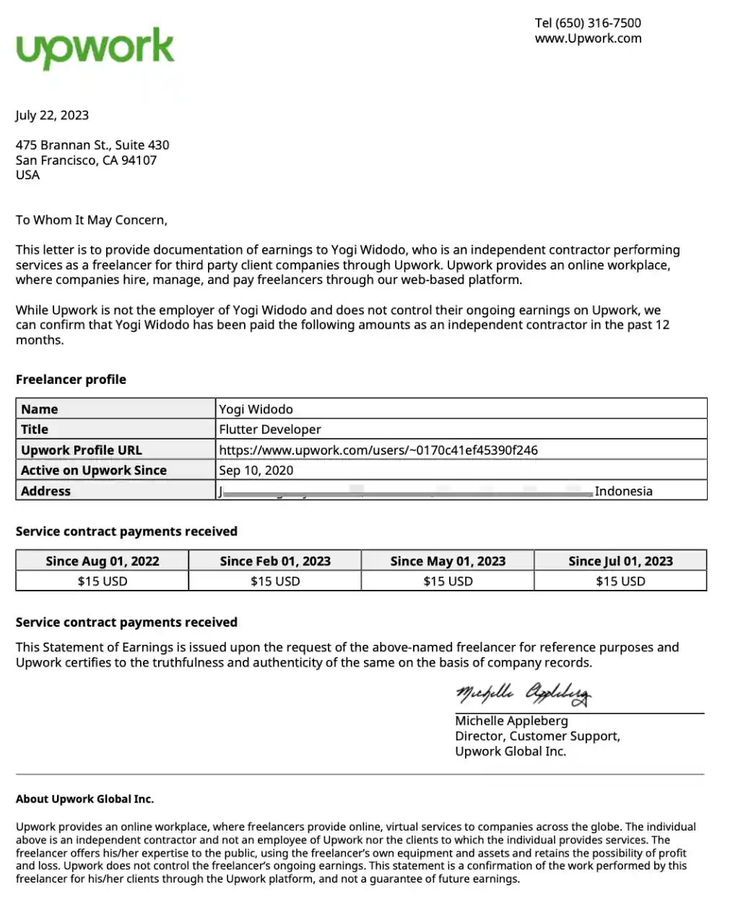

Writing ·
The Real Contract - pengalaman berkesan
ini adalah pengalaman freelance yang berkesan
The Real Contract – Pengalaman Berkesan
Catatan perjalanan tentang kontrak nyata, kepercayaan, kegagalan, dan pembelajaran dalam dunia freelance & profesional IT.
Pendahuluan
The Real Contract bukan sekadar tentang tanda tangan di atas kertas atau nominal pembayaran. Bagi saya, kontrak yang nyata adalah kepercayaan, tanggung jawab, dan konsistensi yang dibangun dari waktu ke waktu.
Perjalanan ini dimulai dari satu SPK sederhana, berkembang menjadi puluhan kontrak jangka panjang, hingga membawa saya bekerja dengan berbagai tim lintas negara. Ada pencapaian yang membanggakan, ada pula kegagalan yang sangat membekas—semuanya membentuk cara saya bekerja hari ini.
Dari Satu SPK Menjadi 17+ Kontrak Berkelanjutan
Salah satu pengalaman paling berkesan dalam karier saya adalah mengelola proyek end-to-end yang awalnya hanya 1 SPK, lalu berkembang menjadi 17+ kontrak jangka panjang.
Kepercayaan klien tidak datang secara instan. Ia dibangun melalui:
- Konsistensi delivery
- Sistem yang stabil dan bisa diandalkan
- Komunikasi langsung dengan tenant dan stakeholder
Hasilnya, solusi yang awalnya hanya MVP tumbuh menjadi sistem 24/7 yang berjalan lebih dari 3 tahun dan digunakan lintas departemen oleh user dari 200+ perusahaan.
Sistem Nyata, Dampak Nyata
Beberapa proyek utama yang menjadi fondasi kepercayaan tersebut:
🚪 Visitor Management System
- QR Code & WhatsApp Integration
- Mengubah proses manual menjadi paperless
⚓ Maritime Operations Platform
- Monitoring operasional real-time
- Mendukung pengambilan keputusan cepat
🚚 Vehicle BBM & Logistics Monitoring
- Transparansi Aktivitas Trucking
- Integrasi alert berbasis IoT
🖥️ Infrastruktur & Otomasi
- Build VPS infrastructure
- Deployment automation
- Monitoring and Analytics
Semua fase proyek saya dokumentasikan rapi di Confluence & Jira, karena transparansi adalah bagian dari kontrak yang sesungguhnya.
SCODEID (2017) – Identitas Independen
Sejak 2017, saya menjalankan SCODEID sebagai brand teknologi independen (saat ini belum terdaftar secara legal).
Fokus utama:
- Custom IT Solutions
- Freelance untuk klien lokal & internasional
Pencapaian utama:
- 10+ proyek freelance selesai
- Klien internasional 🇮🇳 🇯🇵 🇮🇩
- Aktif di platform seperti Upwork
- Klien freelance terakhir aktif: 1 (Sulawesi Utara)
Proyek-Proyek Berkesan Awal Mula Terjun Freelance
Beberapa proyek yang membentuk pengalaman teknis dan non-teknis saya:
- Bimbel Cemerlang – Web Profile Edukasi (Wordpress)
- Absen Monitoring – SMK 1 Samarinda (Mobile Kotlin Native)
- Blanjaque – Real-Time Chat Integration (Mobile Kotlin Firebase)
- Belanja Malang – E-Commerce Platform (Backend LumenAPI, Frontend ReactJS)
- Skripsi Management – Untag (Backend LumenAPI, Frontend ReactJS)
- Government Data Management – SiAdil (Mobile Kotlin Native)
Setiap proyek membawa tantangan berbeda, baik dari sisi teknis maupun komunikasi.
Pengalaman dengan Tim Internasional
🇯🇵 Jepang – Dua Kali, Dua Cerita
Saya dua kali bekerja dengan tim Jepang, dengan orang yang berbeda, namun terhubung oleh satu orang kunci.
Pengalaman paling berkesan:
- Code review langsung oleh leader
- Diskusi arsitektur
- Implementasi Domain-Driven Design (DDD)
- Multi-language support (JP, EN, ID)
Proyek utamanya adalah Attendance & Leave System berbasis Flutter lintas platform.
NB: yang saya tulis ini adalah yang versi freelance nya, bukan yang kerja sama antara perusahaan yang saya bangun dengan dosen berdua di awal mula
🇮🇩 Indonesia – Tim Lengkap dari Projects.co.id
Salah satu pengalaman unik adalah bekerja dalam tim freelance lengkap:
- Setiap orang berasal dari latar belakang berbeda
- Masing-masing memiliki key role
- Kolaborasi terasa seperti perusahaan mini
Pengalaman ini mengajarkan saya bahwa freelance tidak selalu bekerja sendirian.
Nominal Bukan Segalanya, Tapi Tetap Nyata
Soal kompensasi, setiap kontrak membawa cerita:
- 💰 Tertinggi: Rp 21 juta / 1 milestone ( 7 hari aku selesaikan )
- 📊 Rata-rata: Rp 9 juta - 13 juta / milestone
- 🔻 Terendah: Rp 3 juta / milestone
Nominal rata-rata, aku selesaikan rata-rata 14 hari kerja nonstop 24 jam kapan aja aku butuh dan relax santai santai rata-rata 7 - 10 hari
Nilai ini bukan hanya angka, tapi refleksi dari:
- Kompleksitas proyek
- Membangun Awal Kepercayaan klien
- Pengalaman yang saya bawa
Bukti nyata kadang lebih penting daripada bukti tertulis.
| What is your budget for project? |
|---|
| $1000 - $5000 |
| $5000 - $10000 |
| $20000 - $50000 |
| $50000+ |
| Other |
| Please share your thoughts on budget. |
Kegagalan yang Membekas – Upwork & Play Store Ban
Tidak semua cerita berakhir manis.
Pengalaman paling pahit datang dari kolaborasi dengan rekan 🇮🇳 India melalui Upwork:
- Kurang aware soal kolaborasi akun Play Store
- Akses upload dilakukan tanpa koordinasi
- Terjadi policy violation
- Akun Play Store banned
Padahal kepercayaan sudah dibangun, bahkan proyek awal hanya bernilai $15 per 1 screen milestone / slicing UI. yah yang penting dapet certificate pendapatan pertama kali dari upwork.
Namun dari kegagalan ini, saya belajar:
_Akses, security, dan ownership adalah bagian penting dari kontrak nyata._

If someone relived on a CoE that had to span five years to show income, I don't think it would look good. its oke this just kesenangan tersendiri for me. tapi aku belajar banyak dari pengalaman ini. jadi, aku lebih aware soal akses dan security di project selanjutnya .
🇮🇳 India yang Berkesan – Kisah Berbeda
Menariknya, pengalaman dengan klien India tidak selalu buruk. selang beberapa waktu, saya mendapatkan klien India lain yang sangat sederhana dan profesional.
Salah satu yang paling berkesan:
- Membantu migrasi SDK Android Studio
- Komunikasi jelas
- Pembayaran $25 via Ko-fi
Dari sini saya belajar untuk tidak mengeneralisasi—setiap individu membawa nilai dan cara kerja yang berbeda.
Penutup – Makna The Real Contract
Bagi saya, The Real Contract adalah:
- Kepercayaan yang dijaga
- Komunikasi yang jujur
- Dokumentasi yang rapi
- Tanggung jawab atas keputusan teknis
Baik kontrak besar maupun kecil, dengan klien lokal maupun internasional, semuanya meninggalkan jejak.
Dan dari semua pengalaman ini, saya belajar satu hal penting:
Kontrak sejati tidak berhenti di tanda tangan, tapi hidup dalam setiap keputusan dan hasil kerja kita.
_Ditulis dari pengalaman nyata, kegagalan, pencapaian, dan proses belajar tanpa henti._

Thanks for being here 🙌 Stay sharp, ship clean code, and don’t forget to take a break.
– just for eat developer 🍽️ 👨🍳 🍕
- from www.yogiveloper.com
- old blog https://scodeid.blogspot.com/